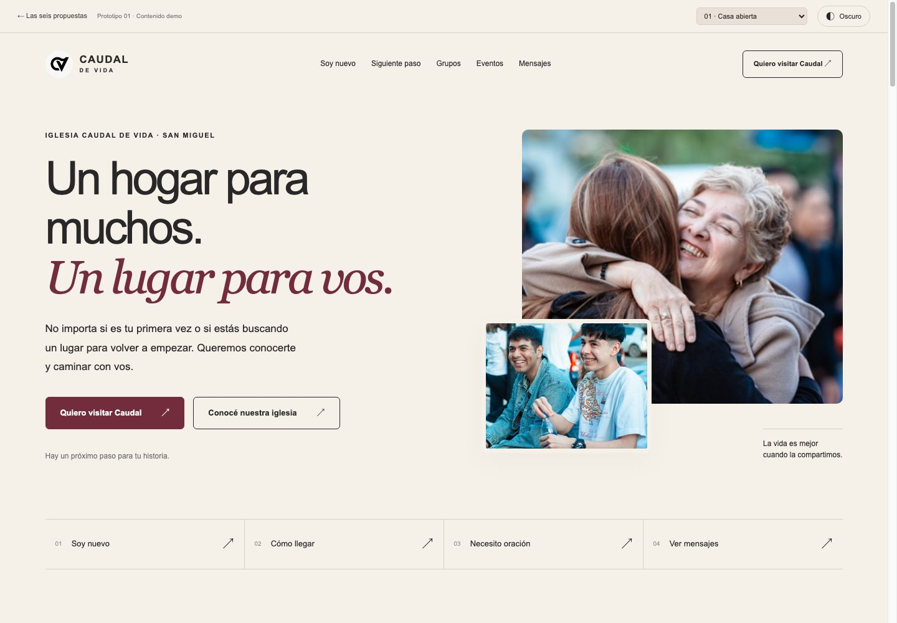
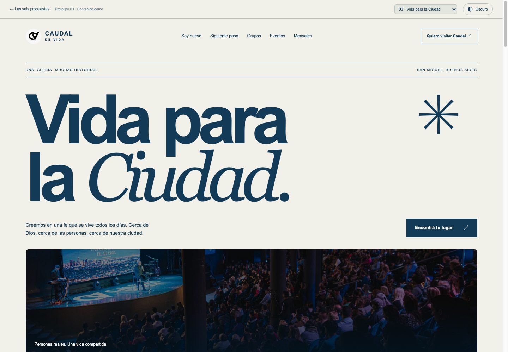
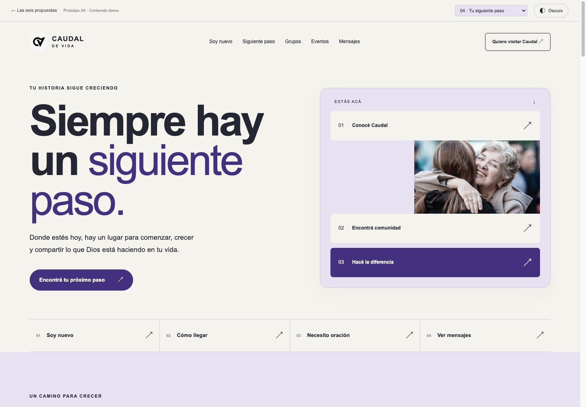
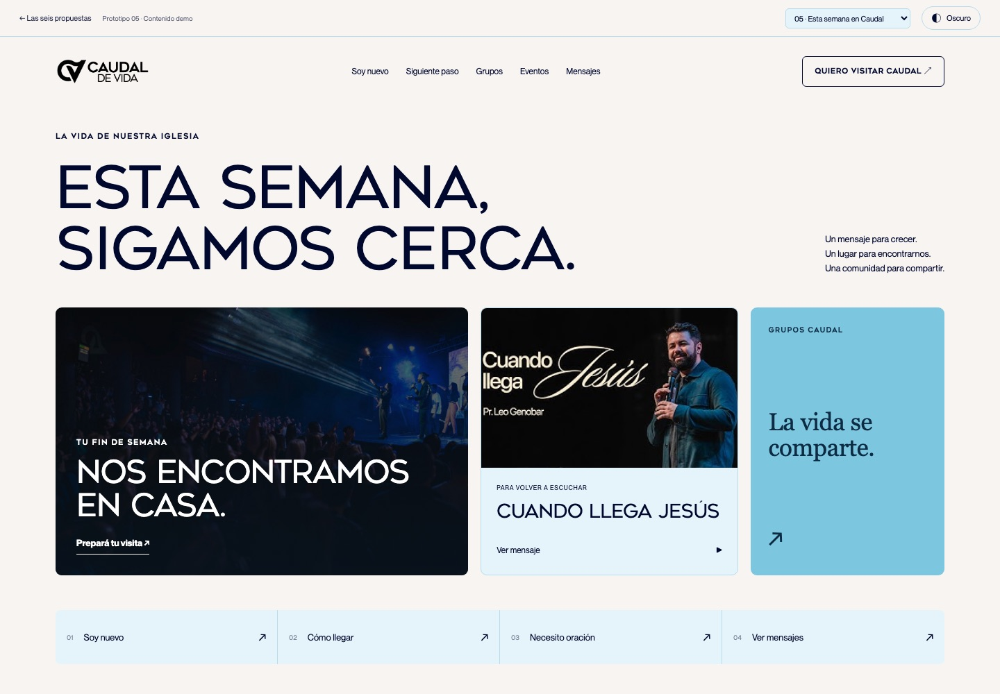
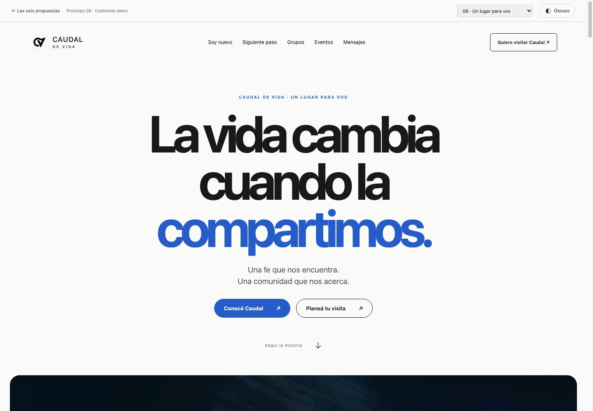

Un hogar para muchos.
Un lugar para vos.
Propuesta estratégica, dossier de referentes, prototipos navegables con identidad oficial (Neue Montreal y Geometos Neue) y hoja de ruta para la nueva web de la iglesia Caudal de Vida.
Seis direcciones. Una misma iglesia.






06 · Un lugar para vos
Scroll narrativo continuo en 3 capítulos y tipografía de gran escala.
Propuesta 01 · El encuentro
El titular de Caudal va sobre la foto de la reunión, con un retrato de bienvenida al lado.
El botón del héroe es Quiero visitar Caudal. El mensaje de la semana baja a la grilla, junto con la visita y los grupos.
Kids, PreA y Cultura Jóvenes aparecen antes que la biblioteca. El recorrido de cuatro pasos queda a la vista sin convertir la portada en un trámite.
Tipografía Neue Montreal para lectura web, Geometos Neue para impacto, paleta calibrada (#0152cd / #00082e) y horarios confirmados de reunión.